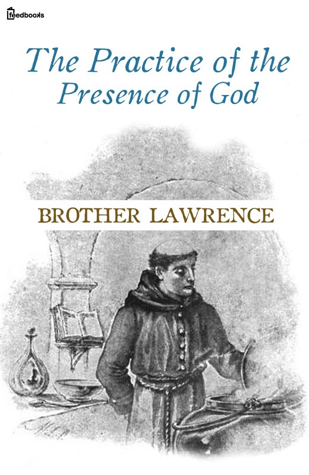

Nicolas Herman of Lorraine (c. 1614–1691) was a soldier, then a footman who, by his own account, was “a great awkward fellow who broke everything”. He joined the Carmelites in Paris as a lay brother, expecting to be made to suffer for his clumsiness, and found “nothing but satisfaction”. For fifteen years he was the monastery cook, a job he naturally disliked. Yet visitors came to the kitchen to learn how he lived in a constant, joyful sense of God's presence. This little classic gathers four conversations recorded by Joseph de Beaufort, who first met him on 3 August 1666, and fifteen letters Lawrence wrote to friends, nuns and a soldier, the last from his deathbed. It is the book Peter Kreeft builds Prayer for Beginners on.
First conversation
At eighteen, Lawrence saw a tree stripped of its leaves and thought that in a little while the leaves would come back, then flowers and fruit. He received “a high view of the Providence and Power of God, which has never since been effaced from his soul.” It set him loose from the world and lit a love for God that, forty years later, he couldn't say had grown, because it had been so great from the start.
His teaching, as de Beaufort records it, starts there: establish yourself in a sense of God's presence by continually conversing with him. It is “a shameful thing to quit His conversation, to think of trifles and fooleries.” Feed the soul with high thoughts of God; quicken your faith (people, he says, amuse themselves with “trivial devotions, which changed daily” instead). Give yourself up to God in everything, “whether He lead us by suffering or by consolation”. When prayer is dry, stay faithful: that is when one act of resignation does most for your growth.
He was not shocked by the world's sins; he was surprised there weren't more. He prayed for sinners and left the rest to God. And he told de Beaufort he could visit as often as he liked, but only if he sincerely wanted to serve God. Otherwise he shouldn't come back.
Second & fourth conversations
Lawrence read many books with many methods and found they “puzzled” him. All he wanted was “how to become wholly God's”. So he resolved “to give the all for the All”: he renounced, for the love of God, everything that was not God, “and I began to live as if there was none but He and I in the world.”
At first this takes “some diligence”, but “after a little care we should find His love inwardly excite us to it without any difficulty.” Eventually, he said, “it would be as difficult for me not to think of God, as it was at first to accustom myself to it.”
He was not interested in technique: “there needed neither art nor science for going to God, but only a heart resolutely determined to apply itself to nothing but Him.” Many people never advance “because they stick in penances, and particular exercises, while they neglect the love of God, which is the end.” Bodily mortifications are useless except as they lead to union by love, and “could not efface a single sin” without love. Acts of the understanding count for little, acts of the will for everything. “Our only business was to love and delight ourselves in God.”
The kitchen
Lawrence's great discovery is that holiness doesn't require different work. “Our sanctification did not depend upon changing our works, but in doing that for God's sake which we commonly do for our own.” He was content when he could “take up a straw from the ground for the love of God”, seeking God alone, “not even His gifts”. God “regards not the greatness of the work, but the love with which it is performed.”
Those who watched him saw it: “He was never hasty nor loitering, but did each thing in its season.” He said he felt closer to God in his outward work than when he left it for retreats, and that “it was a great delusion to think that the times of prayer ought to differ from other times.” He followed his superior's set prayer times but didn't need them.
Lame, and with “no turn for business”, he was once sent to Burgundy to buy the community's wine, and could only get about the boat by rolling over the casks. He told God “it was His business he was about”, gave himself no further worry, and found it “very well performed”. In the kitchen, which he “naturally” disliked, everything became easy once he did it all for the love of God. In time he stopped planning ahead: when it was time to act, “he found in God, as in a clear mirror, all that was fit for him to do.”
Failures and dark years
The serenity was not cheap. For four years Lawrence was convinced he would be damned, and “all the men in the world could not have persuaded him to the contrary.” He reasoned his way through: I came into religious life only for the love of God. Whether I am lost or saved, I will keep acting purely for love of him; at least I'll have done all I could to love him until death. In a letter he says the first ten years were full of suffering: his past sins, the fear that he wasn't devoted enough, even the sense that God's favours were too great to be real. “It seemed to me that the creatures, reason, and God Himself were against me; and faith alone for me.” Then, when he expected to end his days that way, “I found myself changed all at once,” into “a profound inward peace, as if she [my soul] were in her centre and place of rest.”
He had “no scruples”. He was “very sensible of his faults, but not discouraged by them”. He needed no spiritual director, he said, only a confessor. We should “without anxiety, expect the pardon of our sins from the Blood of Jesus Christ”; God seems to give the greatest favours to the greatest sinners, “as more signal monuments of His mercy.”
Letters
The letters keep saying the same thing, and he knew it: “You will tell me that I am always saying the same thing: it is true, for this is the best and easiest method I know.” His argument in one chain: we can't escape life's dangers without God's help, so we must pray constantly. How can we pray without being with him? How be with him except by thinking of him often? How think of him often except by “a holy habit”? And “we must know before we can love.”
He asks almost nothing of busy people. To a soldier: “A little lifting up the heart suffices; a little remembrance of God, one act of inward worship, though upon a march, and sword in hand.” No one notices, and it strengthens courage rather than weakening it. To a friend of 64 (he was nearly 80): “He requires no great matters of us; a little remembrance of Him from time to time, a little adoration … Lift up your heart to Him, sometimes even at your meals, and when you are in company … You need not cry very loud; He is nearer to us than we are aware of.” “We may make an oratory of our heart.” And to someone else: you would think it rude to leave a visiting friend alone, “why then must God be neglected?”
“You tell me nothing new: you are not the only one that is troubled with wandering thoughts.” The will is “mistress of all our faculties” and must bring the mind back. Don't use many words; long discourses invite wandering. “Hold yourself in prayer before God, like a dumb or paralytic beggar at a rich man's gate.” If the mind drifts, don't get upset, because “trouble and disquiet serve rather to distract the mind, than to re-collect it.” Bring it back “in tranquillity”. And the secret: don't let it wander far at other times. Practise the presence all day, and the set times of prayer become easier.
Patience: of an eager young sister, “she would go faster than grace. One does not become holy all at once.” And yet urgency: “Let us begin in earnest … perhaps we have but little left.” “Not to advance in the spiritual life is to go back.” He also admits the start is hard: “At the first, one often thinks it lost time; but you must go on, and resolve to persevere in it to death.”
How he pictured it
In his second letter, Lawrence describes what passes in him now. He has dropped all forms of devotion and set prayers except those his state requires. What remains is “a simple attention, and a general fond regard to God, … an habitual, silent, and secret conversation of the soul with God”, so joyful that he sometimes has to hide it from others.
Some called this state idleness, delusion or self-love. He accepted “a holy inactivity” but not “delusion”: “If this be delusion in me, it belongs to God to remedy it. … I desire only Him.” Notions of God never satisfied him; “faith alone” did, because faith grasps God as infinite, beyond our ideas.
The last letters
The final letters go to a friend in long, severe pain. Lawrence does not pray that she be freed, but that God give her “strength and patience to bear them as long as He pleases. Comfort yourself with Him who holds you fastened to the cross: He will loose you when He thinks fit.” People of the world see sickness only as “a pain to nature”; those who take it from God's hand “commonly find in it great sweetness”. God is often “nearer to us and more effectually present with us, in sickness than in health.”
He is honest that his own joy has an edge. Imagine the greatest criminal eating at the king's table, served by the king himself, yet without assurance of pardon: “my sins, ever present before my eyes, as well as the uncertainty of my pardon, torment me, though in truth that torment itself is pleasing.” Pain would be paradise with God; “the greatest pleasure would be hell to me, if I could relish them without Him.” He had often been near death himself, never more content, and prayed not for relief but “for strength to suffer with courage, humility, and love.”
His last letter returns to the beginning: “Let all our employment be to know God: the more one knows Him, the more one desires to know Him,” because knowledge is the measure of love. Don't seek God for felt favours, “however elevated”; none brings us as close “as faith does in one simple act. … He is within us; seek Him not elsewhere.” He hoped “to see Him within a few days”. The editor adds: “He took to his bed two days after and died within the week.”
Pocket version